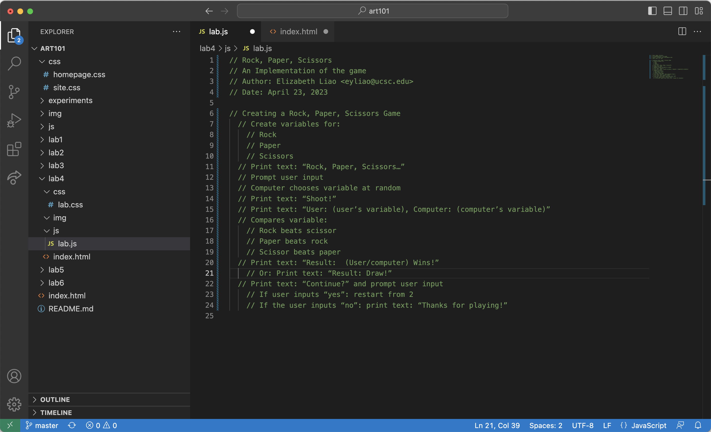

Lab 4 - Pseudocoding and Problem-Solving
// Creating a Rock, Paper, Scissors Game
// Create variables for:
// Rock
// Paper
// Scissors
// Print text: “Rock, Paper, Scissors…”
// Prompt user input
// Computer chooses variable at random
// Print text: “Shoot!”
// Print text: “User: (user's variable), Computer: (computer's variable)”
// Compares variable:
// Rock beats scissor
// Paper beats rock
// Scissor beats paper
// Print text: “Result: (User/computer) Wins!”
// Or: Print text: “Result: Draw!”
// Print text: “Continue?” and prompt user input
// If user inputs “yes”: restart from 2
// If the user inputs “no”: print text: “Thanks for playing!”
Challenge
The challenge we were tasked is to come up with a thorough way to plan out what we wanted to code using pseudocode. This is to not only make sure we understand pseudocode but that we can replicate it and use it. This is to ensure we have everything down we want to code instead of scrambling to think of what to do as we code.
Problems
We didn't have any problems with this lab other than finding a time where we were both available to work together.
Reflection
With this assignment, we believe the results speak for themselves. We were able to come up with a very thorough pseudocode that went in depth into the game we might wish to code. Not only that, we also managed to come up with a thorough cookie psuedocode along with the game. We were able to work very well together despite the difference in times.
Results
This is what the pseudocode for our Rock, Paper, Scissors Game looks like:
